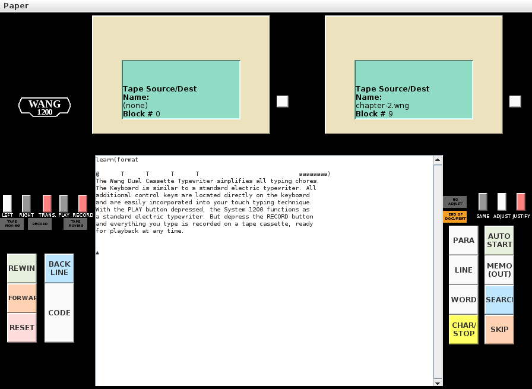

Status: Mostly working, still need to get underlining to display correctly and probably a few other things. GUI needs some clean-up, too.
Special thanks to Jim Battle at wang1200.org for preserving (and sharing) all the technical and product information, and for the microcode image, support, and input.
Copyright © 2011, 2012, Douglas Miller